API¶
Contents
- API
- Controller for simulations (
main) - Implementation of a spiking multilayer perceptron (
lib.snn) - Implementing, training, and evaluating a spiking neural network (
lib.spiking_functions) - A spiking layer module that maintains its own parameters (
lib.spiking_layer) - A collection of helper functions (
lib.utils)
- Controller for simulations (
The API describes all functionalities implemented for this exercise. Of particular interest is the main script, which can be used to validate an implementation (see testing for how to properly verify your implementation).
The modules lib.spiking_functions and lib.spiking_layer contain the missing functionalities that have to be implemented. There is a new theory question in week 2. Don’t forget to answer the theory question in the file theory_question.txt and submit the completed .txt file with your code.
- Throughout, the following notation is used:
 : The membrane potential.
: The membrane potential. : The post-synaptic current.
: The post-synaptic current. : The spiking activity.
: The spiking activity.
Controller for simulations (main)¶
The module main is an executable script that controls the simulations
(i.e., the training and testing of MNIST digit classification tasks).
For more usage information, check out:
$ python3 main.py --help
main.train(args, device, x, y, net) |
Trains the given network on the MNIST dataset. |
main.test(args, device, x, y, net) |
Tests a trained network by computing the classification accuracy on the test set. |
main.run() |
Runs the script. |
-
main.train(args, device, x, y, net)[source]¶ Trains the given network on the MNIST dataset.
The
main.trainmethod takes data (x, y) and a spiking neural net, puts the net in training mode, and sets up the optimiser. Then, for each epoch, it runs through the whole MNIST dataset once, updating the weights once every mini-batch, after the images in this mini-batch have been converted to spike trains. Note, theFunctionlib.spiking_functions.loss_on_spikes()is used to compute the loss.Parameters: - args (argparse.Namespace) – The command-line arguments.
- device (torch.device) – The PyTorch device to be used.
- x (torch.Tensor) – The training inputs.
- y (torch.Tensor) – The training targets.
- net (lib.snn.SNN) – The spiking neural network.
-
main.test(args, device, x, y, net)[source]¶ Tests a trained network by computing the classification accuracy on the test set.
Parameters: - (...) – See docstring of function
train(). - x (torch.Tensor) – The testing inputs.
- y (torch.Tensor) – The testing targets.
Returns: The classification accuracy for the test data (x, y) when using the network
net. Note, theFunctionlib.spiking_functions.accuracy_on_spikes()is used to compute the accuracy.Return type: (float)
- (...) – See docstring of function
Implementation of a spiking multilayer perceptron (lib.snn)¶
The module lib.snn implements a fully-connected spiking neural network.
Internally, it will make use of Functions implemented in module
lib.spiking_layer to define the spiking dynamics of all layers of the
network.
lib.snn.SNN(args[, n_in, n_out, n_hidden]) |
Implementation of a fully-connected spiking neural network. |
lib.snn.SNN.forward(x) |
Compute the outputs  of the network. of the network. |
-
class
lib.snn.SNN(args, n_in=1, n_out=1, n_hidden=[10])[source]¶ Bases:
torch.nn.modules.module.ModuleImplementation of a fully-connected spiking neural network.
The
SNNis implemented as atorch.nn.Module, which is a convenient object for building neural networks, sinceModulescan contain otherModules.Modulescan be instantiated multiple times, as with multiple instances of the same type of layers. Submodules, (which are themselvesModules) can easily be manipulated together as a wholeModule. For example, theparametersfor aModuleincludes all theparametersattributes of its submodules which you can feed to the optimiser together.The
Modulebuilt here is a spiking neural network, constructed from layers of spiking neurons defined by in thespiking_layerscript.-
spiking_layers¶ A container for your spiking layers.
Type: torch.nn.ModuleList
Parameters: - n_in (int) – Network input size.
- n_out (int) – Network output size.
- n_hidden (list) – Size of each hidden layer of the network. This
argument implicitly defines the
depthof the network. - args (argparse.Namespace) – The command-line arguments.
-
depth Getter for read-only attribute
depth.
-
forward(x)[source]¶ Compute the outputs
of the network.Parameters: x (torch.Tensor) – A tensor of shape 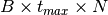, where  is mini-batch size,
is mini-batch size,  is number of
timesteps, and
is number of
timesteps, and  is the dimension of a flattened MNIST
image (i.e. 784).
is the dimension of a flattened MNIST
image (i.e. 784).Returns: Tuple containing: - U_layers (list): A list of tensors of membrane potentials in
- each layer(other than the input), each with shape
 , where
is mini-batch size, is number of
timesteps, and
, where
is mini-batch size, is number of
timesteps, and  is the number of neurons in the
layer.
is the number of neurons in the
layer.
- S_layers (list): A list of tensors of spiking activities in
- each layer (other than the input), each
with shape ,
where is mini-batch size, is
number of timesteps, and is the number of
neurons in the layer.
Return type: (tuple)
-
Implementing, training, and evaluating a spiking neural network (lib.spiking_functions)¶
The module lib.spiking_functions contains custom functions that should
be used for running, training and evaluating spiking networks. Specifically,
you must implement the surrogate gradient for the spiking nonlinearity, as well
as the functions computing the loss and the accuracy on the spike trains of the
output neurons. You will also implement a function that calculates a
regularisation loss term on the spiking activities.
New functionality can be added to
autograd by creating a subclass of class torch.autograd.Function.
If you have pasted your answer to lib.spiking_functions.spike_function()
from last week, then the forward pass
torch.autograd.Function.forward() is already implemented for you in
lib.spiking_functions.SurrogateSpike.forward().
As discussed in the lecture and in the exercise session, we will use the
derivative of the scaled logistic function for the surrogate gradient. The
code for the backward pass torch.autograd.Function.backward(),
with normalisation and scaling, is already
implemented for you in lib.spiking_functions.SurrogateSpike.forward().
What is missing is the function that calculates the surrogate
gradient: lib.spiking_functions.derivative_logistic(). You must derive
and implement the gradient of the scaled logistic function i.e.
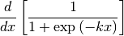
Be careful to include the  in your derivation.
in your derivation.
You will also implement the loss function
lib.spiking_functions.loss_on_spikes(), the accuracy function
lib.spiking_functions.accuracy_on_spikes() and the function that
computes the regularisation loss term
lib.spiking_functions.spike_regularizer().
lib.spiking_functions.logistic(x[, k]) |
A scaled logistic function with maximal value of 1, midpoint at  , and steepness determined by the scale argument . , and steepness determined by the scale argument . |
lib.spiking_functions.derivative_logistic(x) |
The analytic derivative of the scaled logistic function. |
lib.spiking_functions.spike_function(D) |
Spike non-linearity function. |
lib.spiking_functions.SurrogateSpike |
A class to house the functions for the forward and backward passes of a spiking nonlinearity. |
lib.spiking_functions.SurrogateSpike.forward(ctx, D) |
Computes the output of a spiking layer. |
lib.spiking_functions.SurrogateSpike.backward(…) |
Computes the surrogate gradient of the spiking layer. |
lib.spiking_functions.loss_on_spikes(S, T) |
Computes cross entropy loss based on the spike trains of the output units. |
lib.spiking_functions.accuracy_on_spikes(S, T) |
Computes classification accuracy of the spiking network based on the spike trains of the output units. |
lib.spiking_functions.spike_regularizer(…) |
Calculate the regularisation loss term for the spiking activity. |
-
lib.spiking_functions.logistic(x, k=1.0)[source]¶ A scaled logistic function with maximal value of 1, midpoint at
, and steepness determined by the scale argument .Mathematically, this family of functions is given by:
(1)¶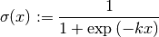
Parameters: - x (torch.tensor) – Input on which to compute the function.
- k (float) – Steepness of the logistic curve.
Returns: The logistic value of x.
Return type: (torch.tensor)
-
lib.spiking_functions.derivative_logistic(x, k=1.0)[source]¶ The analytic derivative of the scaled logistic function.
This function implements the derivative of
lib.spiking_functions.logistic()with respect to the input ,
i.e.
,
i.e.Please compute the derivative and implement it. Note that you can call
lib.spiking_functions.logistic()within this function if you want to.Parameters: - x (torch.tensor) – Input on which to compute the derivative.
- k (float) – Steepness of the curve.
Returns: The derivative of the logistic on x.
Return type: (torch.tensor)
-
lib.spiking_functions.spike_function(D)[source]¶ Spike non-linearity function.
This function takes 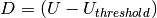 as input, which is the amount by which the membrane potential of neurons is above the membrane threshold 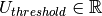. There are
neurons in a layer and minibatch size is , hence
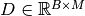.This function computes the spiking nonlinearity, which should produce a spike when a neuron’s membrane potential exceeds or is equal to the membrane threshold potential i.e. when 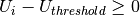.
The spiking nonlinearity we use here is the simple Heaviside step function, 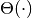, defined as
(2)¶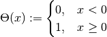
Last week, you coded the
spike_function()method to take 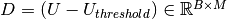 as input and compute 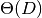 elementwise for each entry in the matrix. This is the same function. You should paste the code you wrote last week for that function in this week’s function.Parameters: D – A matrix of shape 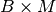 representing 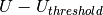, the difference between the membrane potential of each of the neurons in each of the
images of the mini-batch.Returns: The output spikes, obtained by applying (defined in eq. (2)) elementwise to D.
-
class
lib.spiking_functions.SurrogateSpike[source]¶ Bases:
torch.autograd.function.FunctionA class to house the functions for the forward and backward passes of a spiking nonlinearity.
Because this class is an instance of
torch.autograd.Function, we are able to use all of PyTorch’s autograd functionality. It has two components: the forward function and the backward function.If you have pasted your answer to
lib.spiking_functions.spike_function()from last week, then the forward passtorch.autograd.Function.forward()is already implemented for you.For the backward pass, typically we take the partial derivative of the forward nonlinearity with respect to each element of the inputs that is tagged as requiring the gradient. However, the gradient of the step function (and many other spiking non-linearities) is zero everywhere except at 0 where it is ill-defined. Therefore it is necessary to use the gradient of a different function for the backward pass. This is the ‘surrogate gradient’.
Here we will take the derivative of the logistic function with respect to its input as the surrogate gradient, as implemented in
lib.spiking_functions.derivative_logistic().-
scale= 20.0
-
static
forward(ctx, D)[source]¶ Computes the output of a spiking layer.
In the forward pass we compute a step function of the input Tensor and return it. This directly applies your
spike_function()implemented already for last week’s tutorial.Parameters: - ctx – A context. Should be used to store activations that are needed in the backward pass. To achieve this we use the ctx.save_for_backward method.
- D – A matrix of shape representing
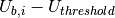, the difference between the
membrane potential of each of the neurons in each of
the mini-batches.
Returns: The output spikes, obtained by applying
 (defined in
eq. (2)) elementwise to D.
(defined in
eq. (2)) elementwise to D.
-
static
backward(ctx, grad_output)[source]¶ Computes the surrogate gradient of the spiking layer.
In the backward pass we receive a Tensor D we need to compute the surrogate gradient of the loss with respect to the input, which represents the difference between the membrane potential of the layer and the membrane threshold: . Here we use the partial derivative of the scaled logistic function with respect to all input tensors that are flagged to require gradients.
The derivative of the logistic function peaks at 0.25. We found that it works well to normalise the gradient by multiplying the gradient by 4. In order to control the steepness of the surrogate gradient around the spike, we include the parameter
SurrogateSpike.scale.Parameters: ctx – A context. Returns: - The gradient of the loss with respect to the
- input.
Return type: grad (torch.tensor)
-
-
lib.spiking_functions.loss_on_spikes(S, T)[source]¶ Computes cross entropy loss based on the spike trains of the output units.
Takes a set of output spikes in form of a tensor 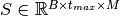, where
denotes the size of the mini-batch, the
number of timesteps during which each mini-batch is presented, and
the number of output units. Additionally, it takes a set of target labels
 , indicating the true class of each image
, indicating the true class of each image
 in the current mini-batch.
in the current mini-batch.The loss calculated here is the cross-entropy loss applied to the total number of spikes over all timesteps for each output neuron for each image.
It is calculated as follows:
Let 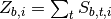 be the total number of spikes over all timesteps for each output neuron
 for each image .
Then calculate the cross entropy loss:
for each image .
Then calculate the cross entropy loss: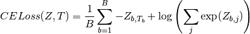
You may wish to refer to the pytorch documentation for its native
torch.nn.CrossEntropyLossclass and use it.Parameters: - S – The output spike trains, i.e., the matrix .
- T – The target activations, i.e., the matrix
 .
.
Returns: The cross entropy loss on the sum of spikes.
Return type: (float)
- S – The output spike trains, i.e., the matrix
-
lib.spiking_functions.accuracy_on_spikes(S, T)[source]¶ Computes classification accuracy of the spiking network based on the spike trains of the output units.
Takes a set of output spikes in form of a matrix , where
denotes the size of
the mini-batch, the number of timesteps during which each
mini-batch is presented, and the number of output units.
Additionally, this Functionrequires a set of targets 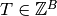, indicating the correct classes of the current mini-batch.Using these two arguments, it finds the output neurons that have the highest membrane spiking rate for each image, and compares these with the target labels to compute the accuracy.
Letting be the summed number of spikes across all timesteps for each output neuron
for each image
,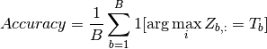
where 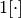 is the indicator function.
Parameters: - S – The output spike trains, i.e., the matrix .
- T – The target classes, i.e., the vector .
Returns: The classification accuracy of the current batch.
Return type: (float)
- S – The output spike trains, i.e., the matrix
-
lib.spiking_functions.spike_regularizer(spikes_list)[source]¶ Calculate the regularisation loss term for the spiking activity.
Biological neurons usually do not fire at rates greater than around 20Hz. In order to regularise our networks so that the neurons do not fire at grossly unphysiological rates, we calculate an additional term to add to the training loss.
Many different types of regularisation could work. Here you should implement a regularisation term that has two components:
The first component sums all the spikes over all hidden layers, batch elements, timesteps and neurons, i.e.
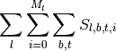
where 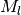 is the number of neurons in the hidden layer
 .
This corresponds to an L1 regularization on the total number of spikes at
the population, thus inducing sparsity at a population level.
.
This corresponds to an L1 regularization on the total number of spikes at
the population, thus inducing sparsity at a population level.The second component regularizes the firing of individual neurons. It takes the mean squared sum of spikes for individual neurons (summed across batch elements and timestes), summed over all hidden layers, i.e.
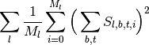
This corresponds to an L2 norm in the firing rate of individual neurons, thus inducing neurons to have low firing rates.
Finally, the regularisation loss term returned by this function consists of the sum of these two components.
Please note that the inputs to this function only correspond to hidden spiking activity. Therefore you do not have to exclude any layers within this function because it is already done for you.
Parameters: spikes_list (list) – a list of tensors of spikes, where each element corresponds to the spiking activity of a hidden layer and has shape (batch size) 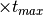 (number of timesteps
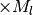 (number of hidden units in that layer).Returns: The regularisation loss term. Return type: (float)
A spiking layer module that maintains its own parameters (lib.spiking_layer)¶
The module lib.spiking_layer contains the implementation of a single
spiking layer. The goal is to utilize the custom
Functions implemented in module lib.spiking_functions
and to provide a wrapper that takes care of managing the parameters
( ) of such a layer. The layers defined here will then be used in
) of such a layer. The layers defined here will then be used in
lib.snn to define a multi-layer spiking network.
In biological networks, the electrical activity from a pre-synaptic spike leads to changes in the membrane potential of a post-synaptic neuron. In nature, this is a process involving many ions and channels. Here we will use a simplified model: the leaky integrate-and-fire model for spiking neurons. Such models are composed of 1) a description of the dynamics of the membrane potential, and 2) a mechanism for triggering spikes.
In our implementation, the dynamics of the membrane potential, together with the dynamics of the current and spiking variables, are updated at each timestep based on a discrete implementation of a set of differential equations described below.
The ODEs that you will implement sequentially update the membrane potentials
, the auxiliary variable for the alpha function  , and the
current . The equation for the membrane potential of neuron
is:
, and the
current . The equation for the membrane potential of neuron
is:
(3)¶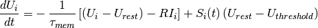
Most commonly, post-synaptic currents resulting from spiking inputs from
pre-synaptic neurons are modeled as exponential decay functions, where a spike
causes an instantaneous increase in the post-synaptic membrane potential, which
then decays exponentially with time i.e. 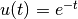, assuming the
pre-synaptic spike occurs at  , and a resting potential of 0.
A more biologically plausible model is an alpha-shaped post-synaptic current,
where the post-synaptic current following a pre-synaptic spike has a finite rise
time. In this case we would have 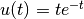. In this tutorial, we
ask you to implement alpha-shaped post-synaptic currents by filling the methods
, and a resting potential of 0.
A more biologically plausible model is an alpha-shaped post-synaptic current,
where the post-synaptic current following a pre-synaptic spike has a finite rise
time. In this case we would have 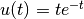. In this tutorial, we
ask you to implement alpha-shaped post-synaptic currents by filling the methods
lib.spiking_layer.update_H() and lib.spiking_layer.update_I().
These are based on the following equations:
(4)¶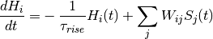
(5)¶
All equations were derived during the tutorial session, and can be found in the tutorial slides. Note, however, that only a discrete version for the case of exponential-shaped post-synaptic currents was derived, and not for the alpha-shaped case, which is the one you need here. Therefore you will need to figure out how to turn the ODEs into code appropriately.
lib.spiking_layer.SpikingLayer(in_features, …) |
Implements a single spiking layer. |
lib.spiking_layer.SpikingLayer.update_U(U, I, S) |
Updates the membrane potential. |
lib.spiking_layer.SpikingLayer.update_I(I, H) |
Updates the post-synaptic current. |
lib.spiking_layer.SpikingLayer.update_H(H, …) |
Updates the state of the auxiliary variable for alpha-shaped post-synaptic current. |
lib.spiking_layer.SpikingLayer.forward(X) |
Computes the output activation of a spiking layer. |
-
lib.spiking_layer.surrogate_spike_fn()¶
-
class
lib.spiking_layer.SpikingLayer(in_features, out_features, args)[source]¶ Bases:
torch.nn.modules.module.ModuleImplements a single spiking layer.
The
lib.SpikingLayerclass contains all the parameters and variables necessary to implement a single spiking layer. It will be a submodule of thetorch.nn.Moduleinstance namedlib.snn.SNN. You will use the classlib.SpikingLayerto define your hidden layer and your output layer.-
weights¶ The weight matrix
of the layer.Type: torch.nn.Parameter
-
compute_spikes¶ Spike non-linearity function.
Type: func
Parameters: - in_features (int) – Size of the pre-synaptic layer.
- out_features (int) – Size of the current layer.
- args (argparse.Namespace) – The command-line arguments.
-
weights Getter for read-only attribute
weights.
-
update_U(U, I, S)[source]¶ Updates the membrane potential.
Updates the membrane potential given the current and past states of the network as specified in eq. (3). As a discretized version of eq. (3) please use the following:
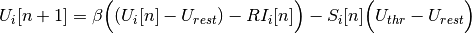
Note that this is not the most mathematically correct way to discretize eq. (3), but for the purpose of the current tutorial we ask you to use the above discretized version. For more explanations, please refer to the
DiscretizedODEs.pdffile in moodle.Parameters: - U – The membrane potential .
- I – The post-synaptic current .
- S – The spiking activity .
Returns: The updated membrane potential of the neurons in the layer.
- U – The membrane potential
-
update_H(H, inputs)[source]¶ Updates the state of the auxiliary variable for alpha-shaped post-synaptic current.
Implementation of eq. (4). Please note that the pre-synaptic inputs have already been multiplied by the weights at the beginning of the forward method. Therefore, you should only make sure you give the correct inputs argument to this function.
Parameters: - H – The auxiliary variable for the alpha-shaped post-synaptic
currents .
- inputs – The inputs (weighted spikes) to the layer in the current time step.
Returns: The updated auxiliary current variable for the neurons in the layer.
- H – The auxiliary variable for the alpha-shaped post-synaptic
currents
-
update_I(I, H)[source]¶ Updates the post-synaptic current.
Updates the post-synaptic current given the current and past states of the network as specified in eq. (5). As a discretized version of eq. (5) please use the following:
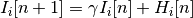
Parameters: - I – The post-synaptic current .
- H – The auxiliary variable for the alpha-shaped post-synaptic
currents .
Returns: The updated post-synaptic current of the neurons in the layer.
- I – The post-synaptic current
-
forward(X)[source]¶ Computes the output activation of a spiking layer.
This method computes the membrane potential and spiking activity of the current layer across all time steps given the pre-synaptic spiking activity. For this, the state of the layer is updated time step by time step; i.e. the post-synaptic current, membrane potential and spiking activity are computed in each time step. The states are updated based on the computational graph provided in Figure 2 in Neftci et al. (2019), and when filling in the missing lines you should pay extra attention and make sure that the values you provide to the update methods belong to the right time step according to this computational graph.
Note that since we deal with alpha-shaped post-synaptic currents here (and not exponential decay post-synaptic currents), the computational graph has an extra variable
that is updated based on the
inputs in the previous time step, and its own value in the previous
time step. in a given time step is then used to compute the
post-synaptic current in the following time step. Notice that
for this extra equation, the lib.SpikingLayerclass has an attribute that governs the decay rate of the variable
. For further discussion see
that governs the decay rate of the variable
. For further discussion see lib.spiking_layer.Parameters: X – The spiking activity of the previous layer. Returns: Tuple containing: - U: The membrane potential for all neurons of the layer in all time steps.
- S: The spiking activity of all neurons of the layer in all time steps.
Return type: (tuple)
-
A collection of helper functions (lib.utils)¶
The module lib.utils contains several general purpose utilities and
helper functions.
The functions utils.current2firing_time() and
utils.sparse_data_generator() are taken directly from Friedemann Zenke’s
Spytorch tutorial:
lib.utils |
A collection of helper functions (lib.utils) |
lib.utils.current2firing_time(x[, tau, thr, …]) |
Converts MNIST pixel values to latency-coded spikes. |
lib.utils.sparse_data_generator(x, y, args) |
A generator that takes mini-batches in analog format and transforms them to spike trains as sparse tensors. |
lib.utils.plot_weight_hist(parameters, …) |
Plot histogram of the initial and trained weights in each layer. |
-
lib.utils.current2firing_time(x, tau=20, thr=0.2, tmax=1.0, epsilon=1e-07)[source]¶ Converts MNIST pixel values to latency-coded spikes.
Computes first firing time latency for a current input x assuming the charge time of a current based LIF neuron. Images to spikes using a spike latency code, i.e. the higher the input intensity, the earlier the first spike will be fired.
Parameters: x (numpy.ndarray) – The “current” values for each pixel in each image. Shape: (samples, 784)
Keyword Arguments: Returns: - Time to first spike for each “current” x.
Shape: (samples, 784)
Return type: T (numpy.ndarray)
-
lib.utils.sparse_data_generator(x, y, args, shuffle=True)[source]¶ A generator that takes mini-batches in analog format and transforms them to spike trains as sparse tensors.
Parameters: - x – The data ( sample x event x 2 ) the last dim holds (time,neuron) tuples, (samples, 28 x 28)
- y – The labels (samples,)
- args (argparse.Namespace) – The command-line arguments.
- shuffle (boolean) – Whether batches should be shuffled.
Yields: (tuple) –
Tuple containing:
- X_batch: Spiking mini-batch.
- y_batch: Target classes for the current mini-batch.
-
lib.utils.load_MNIST(path='data/')[source]¶ (Down)Loads data for a classification task on MNIST images.
The Torchvision library provides methods to load the MNIST dataset from a local directory if the data have been downloaded previously, or to download and load the data if they cannot be found locally.
The data are split into train and test sets and are preprocessed to convert the pixel values from [0,255] to [0,1]. Each 28 x 28 image is flattened to a 784 vector.
Parameters: path (str) – The path to the local MNIST dataset or the directory into which the MNIST dataset will be downloaded. Returns: Tuple containing: - train_x: Training set images.
- test_x: Test set images.
- train_y: Training set labels.
- test_y: Test set labels.
Return type: (tuple)
-
lib.utils.plot_weight_hist(parameters, initial_weights)[source]¶ Plot histogram of the initial and trained weights in each layer.
For each layer, a different subplot with overlapping weight distributions before and after training will be shown.
Parameters: - parameters – The set of weights after training.
- initial_weights (list) – The set of initial weights.